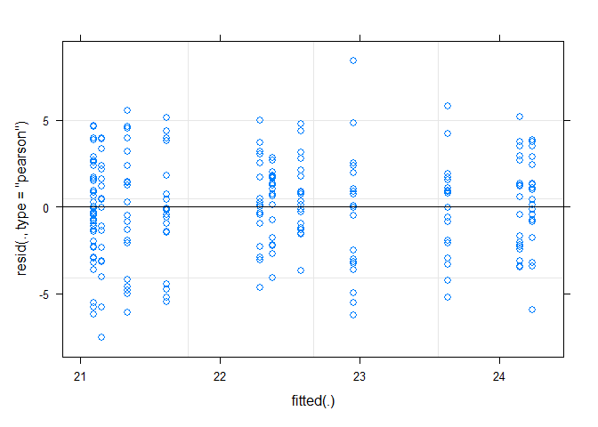
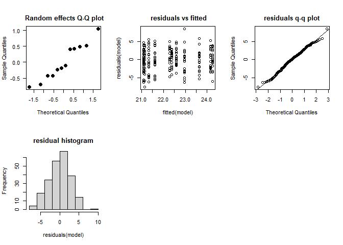
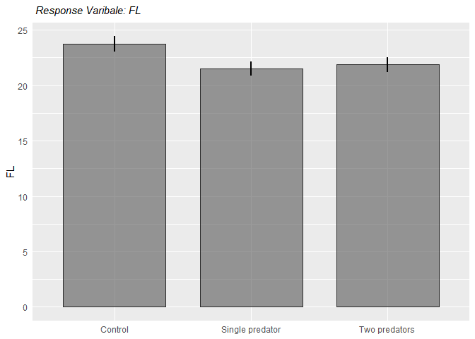
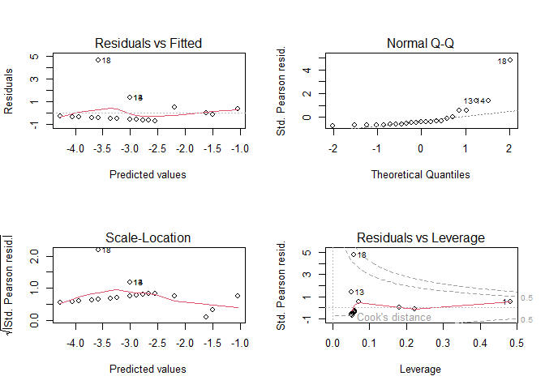
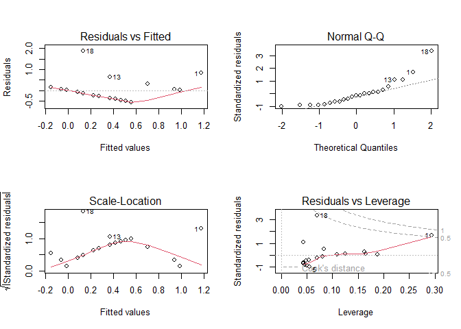
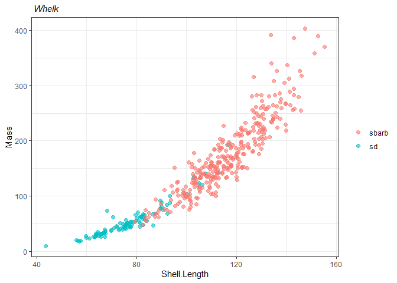
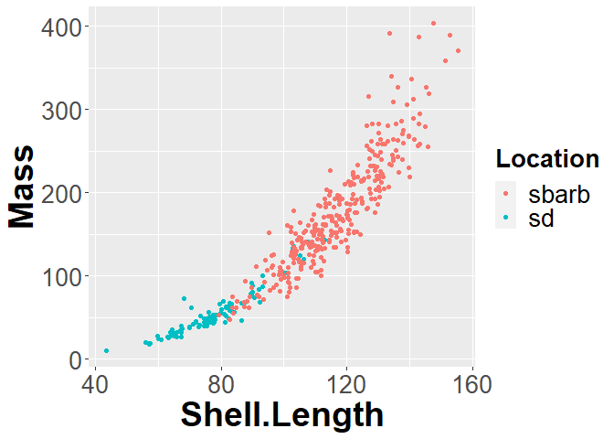

11. Linear model extensions
jsg
Last compiled on 11 December, 2022 17:39
require(tidyverse)
require(lme4)## Loading required package: lme4## Warning: package 'lme4' was built under R version 4.2.2## Loading required package: Matrix##
## Attaching package: 'Matrix'## The following objects are masked from 'package:tidyr':
##
## expand, pack, unpackrequire(car)
require(multcomp)## Loading required package: multcomp## Loading required package: mvtnorm## Loading required package: survival## Loading required package: TH.data##
## Attaching package: 'TH.data'## The following object is masked from 'package:MASS':
##
## geyserrequire(Rmisc)## Loading required package: Rmisc## Loading required package: lattice## Loading required package: plyr## Warning: package 'plyr' was built under R version 4.2.2## ------------------------------------------------------------------------------## You have loaded plyr after dplyr - this is likely to cause problems.
## If you need functions from both plyr and dplyr, please load plyr first, then dplyr:
## library(plyr); library(dplyr)## ------------------------------------------------------------------------------##
## Attaching package: 'plyr'## The following objects are masked from 'package:dplyr':
##
## arrange, count, desc, failwith, id, mutate, rename, summarise,
## summarize## The following object is masked from 'package:purrr':
##
## compactlibrary(MuMIn)
require(mgcv)## Loading required package: mgcv## Warning: package 'mgcv' was built under R version 4.2.2## Loading required package: nlme##
## Attaching package: 'nlme'## The following object is masked from 'package:lme4':
##
## lmList## The following object is masked from 'package:dplyr':
##
## collapse## This is mgcv 1.8-41. For overview type 'help("mgcv-package")'.Before doing this, review the ** Linear Model Extensions** lecture set slides from https://sites.google.com/view/biostats/lessons/linear-model-extensions and the 11_Mixed_models_and_other_extensions.R script in the lecture files folder of the CUNY-BioStats github repository. Make sure you are comfortable with null and alternative hypotheses and appropriate plots for all examples.
Remember you should
- add code chunks by clicking the Insert Chunk button on the toolbar or by pressing Ctrl+Alt+I to answer the questions!
- knit your file to produce a markdown version that you can see!
- save your work often
- commit it via git!
- push updates to github
- In a study considering how the presence of sea stars changed snail
growth patterns, ~25 snails were grown in containers containing 0,1, or
2 seastars.
Since non-consumptive effects are often threshold based, these treatments levels should be considered as groups (not as a continuous variable!). The data is available at
FL is the final length of measured snails, and the treatment (coded 1-3) correspond to [1=Control (no predators). 2=1 predator treatment,3=2 predator treatment).
What method would you use to analyze this data and why? Carry out
your test, stating your null hypothesis, test assumptions, p-value, and
interpretation.
Describe any necessary steps and provide graphics and values as needed.
If needed, can you determine which treatments differ from each
other?
snail <- read.csv(file = "snail_modified_for_class.csv") %>%
as_tibble() %>%
mutate_at(vars(Treatment), factor) %>%
mutate(treat = case_when(
Treatment == "1" ~ "Control",
Treatment == "2" ~ "Single predator",
Treatment == "3" ~ "Two predators"
)
) %>%
mutate_at(vars(treat), factor)snail## # A tibble: 234 × 4
## Container Treatment FL treat
## <int> <fct> <dbl> <fct>
## 1 1 3 22.5 Two predators
## 2 1 3 20.6 Two predators
## 3 1 3 23.1 Two predators
## 4 1 3 23.7 Two predators
## 5 1 3 24.4 Two predators
## 6 1 3 23.6 Two predators
## 7 1 3 20.1 Two predators
## 8 1 3 23 Two predators
## 9 1 3 23.4 Two predators
## 10 1 3 25.0 Two predators
## # … with 224 more rowssnail.lmer <- lmer(FL ~ treat + (1|Container), snail)summary(snail.lmer)## Linear mixed model fit by REML ['lmerMod']
## Formula: FL ~ treat + (1 | Container)
## Data: snail
##
## REML criterion at convergence: 1163.4
##
## Scaled residuals:
## Min 1Q Median 3Q Max
## -2.62147 -0.68438 0.04799 0.62360 2.93899
##
## Random effects:
## Groups Name Variance Std.Dev.
## Container (Intercept) 0.6509 0.8068
## Residual 8.2124 2.8657
## Number of obs: 234, groups: Container, 12
##
## Fixed effects:
## Estimate Std. Error t value
## (Intercept) 23.7426 0.5178 45.857
## treatSingle predator -2.2159 0.7295 -3.037
## treatTwo predators -1.8844 0.7353 -2.563
##
## Correlation of Fixed Effects:
## (Intr) trtSnp
## trtSnglprdt -0.710
## trtTwprdtrs -0.704 0.500plot(snail.lmer)
check_mixed_model <- function (model, model_name = NULL) {
#collection of things you might check for mixed model
par(mfrow = c(2,3))
#not sure what this does with mutliple random effects, so stop with 1 for now
if(length(names(ranef(model))<2)){
qqnorm(ranef(model, drop = T)[[1]], pch = 19, las = 1, cex = 1.4, main= paste(model_name,
"\n Random effects Q-Q plot"))
}
plot(fitted(model),residuals(model), main = paste(model_name,
"\n residuals vs fitted"))
qqnorm(residuals(model), main =paste(model_name,
"\nresiduals q-q plot"))
qqline(residuals(model))
hist(residuals(model), main = paste(model_name,
"\nresidual histogram"))
}check_mixed_model(snail.lmer)
Anova(snail.lmer, type = "III")## Analysis of Deviance Table (Type III Wald chisquare tests)
##
## Response: FL
## Chisq Df Pr(>Chisq)
## (Intercept) 2102.876 1 < 2.2e-16 ***
## treat 10.681 2 0.004792 **
## ---
## Signif. codes: 0 '***' 0.001 '**' 0.01 '*' 0.05 '.' 0.1 ' ' 1snail_comparison <- glht(snail.lmer, linfct = mcp(treat = "Tukey"))summary(snail_comparison)##
## Simultaneous Tests for General Linear Hypotheses
##
## Multiple Comparisons of Means: Tukey Contrasts
##
##
## Fit: lmer(formula = FL ~ treat + (1 | Container), data = snail)
##
## Linear Hypotheses:
## Estimate Std. Error z value Pr(>|z|)
## Single predator - Control == 0 -2.2159 0.7295 -3.037 0.00656 **
## Two predators - Control == 0 -1.8844 0.7353 -2.563 0.02797 *
## Two predators - Single predator == 0 0.3315 0.7326 0.453 0.89329
## ---
## Signif. codes: 0 '***' 0.001 '**' 0.01 '*' 0.05 '.' 0.1 ' ' 1
## (Adjusted p values reported -- single-step method)#graph using Rmisc
snail_summary <- summarySE(snail, measurevar = "FL", groupvars = "treat")snail_summary## treat N FL sd se ci
## 1 Control 78 23.73885 3.032709 0.3433867 0.6837703
## 2 Single predator 81 21.52432 2.943979 0.3271087 0.6509671
## 3 Two predators 75 21.86000 2.870529 0.3314601 0.6604487snail.barplot <- ggplot(snail_summary, aes(x = treat, y = FL)) +
geom_bar(stat = "identity", width = 0.75, color = "#2b2b2b", linewidth = 0.50, alpha = 0.6) +
geom_linerange(aes(ymin = FL - ci, ymax = FL + ci), linewidth = 0.75) +
#ylab(expression(paste("Gas (1000 ",ft^3, ")")))+
xlab("Treatment") +
#geom_smooth(method = "lm", se = F) +
# scale_y_continuous(expression(paste("Temperature")), limits = c(0, 10)) +
# scale_x_discrete(expand = c(0, 1)
#,
#labels = x_labels
# ) +
# scale_fill_manual(breaks = c("North", "West",
# "Southeast"),
# values = c("red", "blue",
# "green"),
# labels = c("North", "West",
# "Southeast")) +
# facet_wrap( ~ Insulate, labeller = as_labeller(label_names), dir = "v", ncol = 1) +
ggtitle(expression(paste(italic(" Response Varibale: FL")))) +
#scale_y_log10(expression(paste("Colony Size (", cm^2, ")"), limits = c(0, 100000))) +
labs(x = NULL) +
theme(#strip.text = element_text(size = 10, color = "black", hjust = 0.50),
#strip.background = element_rect(fill = "#FFFFFF", color = NA),
#panel.background = element_rect(fill = "#FFFFFF", color = NA),
#panel.grid.major.x = element_blank(),
#panel.grid.minor.x = element_blank(),
#panel.grid.minor.y = element_blank(),
#panel.grid.major.y = element_line(color = "#b2b2b2"),
#panel.spacing.x = unit(1, "cm"),
#panel.spacing.y = unit(0.5, "cm"),
#panel.spacing = unit(1, "lines"),
axis.ticks = element_blank(),
#legend.position = "top",
plot.title = element_text(size = 11),
axis.title.y = element_text(size = 11),
legend.title = element_blank()
)snail.barplot
Conclusion
Since multiple oysters were measured in each cage, we need to use a random effect to account for cages. You could also block by cages- it takes up more degrees of freedom, but you have plenty here. Results show a significant differce among treatments (Chi^2~2=10.681, p <.01), so I used a Tukey post hoc test to determine which groups differed from others while controlling for the family wise error rate. REsults indicate the presence of a predator impacts length but not the density.
- (From OZDasl) The data give the ambient temperature and the number of primary O-rings damaged for 23 of the 24 space shuttle launches before the launch of the space shuttle Challenger on January 20, 1986. (Challenger was the 25th shuttle. One engine was lost at sea and could not be examined.) Each space shuttle contains 6 primary O-rings.
Note these are counts. We can analyze this data using a Poisson distribution or binomial. Make sure you understand why each one is possible, which one is better, and carry out the analysis. Data is available @
http://www.statsci.org/data/general/challenger.txt
rings <- read.table("http://www.statsci.org/data/general/challenger.txt",
header = T)rings## Temp Damaged
## 1 53 2
## 2 57 1
## 3 58 1
## 4 63 1
## 5 66 0
## 6 67 0
## 7 67 0
## 8 67 0
## 9 68 0
## 10 69 0
## 11 70 0
## 12 70 0
## 13 70 1
## 14 70 1
## 15 72 0
## 16 73 0
## 17 75 0
## 18 75 2
## 19 76 0
## 20 76 0
## 21 78 0
## 22 79 0
## 23 81 0challenger <- read.csv(file = "challenger.csv") %>%
as_tibble()
#%>%
# mutate_at(vars(Treatment), factor) %>%
# mutate(treat = case_when(
# Treatment == "1" ~ "Control",
# Treatment == "2" ~ "Single predator",
# Treatment == "3" ~ "Two predators"
# )
# ) %>%
# mutate_at(vars(treat), factor)challenger## # A tibble: 23 × 2
## Temp Damaged
## <int> <int>
## 1 53 2
## 2 57 1
## 3 58 1
## 4 63 1
## 5 66 0
## 6 67 0
## 7 67 0
## 8 67 0
## 9 68 0
## 10 69 0
## # … with 13 more rows# Poisson with whole numbers, i.e., counts
challenger.glm1 <- glm(Damaged ~ Temp, family = "poisson", data = challenger)par(mfrow = c(2, 2))
plot(challenger.glm1)
summary(challenger.glm1)##
## Call:
## glm(formula = Damaged ~ Temp, family = "poisson", data = challenger)
##
## Deviance Residuals:
## Min 1Q Median 3Q Max
## -0.92135 -0.76907 -0.54934 -0.02268 2.50169
##
## Coefficients:
## Estimate Std. Error z value Pr(>|z|)
## (Intercept) 5.9691 2.7628 2.161 0.0307 *
## Temp -0.1034 0.0430 -2.405 0.0162 *
## ---
## Signif. codes: 0 '***' 0.001 '**' 0.01 '*' 0.05 '.' 0.1 ' ' 1
##
## (Dispersion parameter for poisson family taken to be 1)
##
## Null deviance: 22.434 on 22 degrees of freedom
## Residual deviance: 16.834 on 21 degrees of freedom
## AIC: 36.061
##
## Number of Fisher Scoring iterations: 6Note: Dispersion is ok!!
Anova(challenger.glm1, type = "III")## Analysis of Deviance Table (Type III tests)
##
## Response: Damaged
## LR Chisq Df Pr(>Chisq)
## Temp 5.6004 1 0.01796 *
## ---
## Signif. codes: 0 '***' 0.001 '**' 0.01 '*' 0.05 '.' 0.1 ' ' 1Try Binomial -> proportion of successes:failures <- number damaged and not!
challenger2 <-
challenger %>%
mutate(
No_damage = 6 - Damaged)challenger2## # A tibble: 23 × 3
## Temp Damaged No_damage
## <int> <int> <dbl>
## 1 53 2 4
## 2 57 1 5
## 3 58 1 5
## 4 63 1 5
## 5 66 0 6
## 6 67 0 6
## 7 67 0 6
## 8 67 0 6
## 9 68 0 6
## 10 69 0 6
## # … with 13 more rowschallenger.glm2 <- glm(cbind(Damaged, No_damage) ~ Temp, family = "binomial", data = challenger2)par(mfrow = c(2, 2))
plot(challenger.glm2)
Anova(challenger.glm2, type = "III")## Analysis of Deviance Table (Type III tests)
##
## Response: cbind(Damaged, No_damage)
## LR Chisq Df Pr(>Chisq)
## Temp 6.144 1 0.01319 *
## ---
## Signif. codes: 0 '***' 0.001 '**' 0.01 '*' 0.05 '.' 0.1 ' ' 1Compare to lm
challenger.lm <- lm(Damaged ~ Temp, data = challenger2)par(mfrow = c(2, 2))
plot(challenger.lm)
summary(challenger.lm)##
## Call:
## lm(formula = Damaged ~ Temp, data = challenger2)
##
## Residuals:
## Min 1Q Median 3Q Max
## -0.5608 -0.3944 -0.0854 0.1056 1.8671
##
## Coefficients:
## Estimate Std. Error t value Pr(>|t|)
## (Intercept) 3.69841 1.21951 3.033 0.00633 **
## Temp -0.04754 0.01744 -2.725 0.01268 *
## ---
## Signif. codes: 0 '***' 0.001 '**' 0.01 '*' 0.05 '.' 0.1 ' ' 1
##
## Residual standard error: 0.5774 on 21 degrees of freedom
## Multiple R-squared: 0.2613, Adjusted R-squared: 0.2261
## F-statistic: 7.426 on 1 and 21 DF, p-value: 0.01268Note: Dispersion is ok!!
Anova(challenger.lm, type = "III")## Anova Table (Type III tests)
##
## Response: Damaged
## Sum Sq Df F value Pr(>F)
## (Intercept) 3.0667 1 9.1973 0.00633 **
## Temp 2.4762 1 7.4264 0.01268 *
## Residuals 7.0021 21
## ---
## Signif. codes: 0 '***' 0.001 '**' 0.01 '*' 0.05 '.' 0.1 ' ' 1Since these are counts we need to use a glm to model the data. We could use a Poisson, but the binomial actually includes more information (like how many did not fail!). Both models indicate a significant relationship between temperature and the number or proportion of failed rings. Results are compared to a linear model.
- Returning to the whelk length-mass relationship from class, try fitting an exponential curve to the data. As a hint, try
nls(Mass ~ exp(b0 + b1 * Shell.Length), whelk,
start = list(b0 =1, b1=0), na.action = na.omit)Compare this model to those that assume a linear and power relationship. Data is available @
https://raw.githubusercontent.com/jsgosnell/CUNY-BioStats/master/datasets/whelk.csv
whelk <- read.csv(file = "whelk.csv") %>%
as_tibble() %>%
mutate_at(vars(Location, Sex), factor) %>%
mutate_at(vars(Mass, Shell.Length), as.numeric)## Warning in mask$eval_all_mutate(quo): NAs introduced by coercion
## Warning in mask$eval_all_mutate(quo): NAs introduced by coercion# mutate(treat = case_when(
# Treatment == "1" ~ "Control",
# Treatment == "2" ~ "Single predator",
# Treatment == "3" ~ "Two predators"
# )
# ) %>%
# mutate_at(vars(treat), factor)whelk## # A tibble: 473 × 4
## Location Mass Sex Shell.Length
## <fct> <dbl> <fct> <dbl>
## 1 sd 126. F NA
## 2 sd 120. M 106.
## 3 sd 40.1 M 75.6
## 4 sd 141. F 108.
## 5 sd 49.7 M 76.2
## 6 sd NA M 70.1
## 7 sd NA F 80.1
## 8 sd NA M 66.4
## 9 sd NA F 106.
## 10 sd NA F 93.1
## # … with 463 more rowswhelk.reg <- ggplot(data = whelk, aes(x = Shell.Length, y = Mass, color = Location)) +
geom_point(size = 2, alpha = 0.6) +
# ylim (0.0, 1.0) +
ggtitle(expression(paste(italic(" Whelk")))) +
# xlab(expression(paste("Mean Wave Height (m)"))) +
# ylab(expression(paste("Benthic Coverage"))) +
# annotate(
# "text",
# x = Inf, y = -Inf,
# label = eqn_plob, parse = TRUE,
# hjust = 1.1, vjust = -.5
# ) +
theme_bw() +
# facet_wrap( ~ type, ncol = 3) +
theme(#panel.spacing = unit(1, "lines"),
legend.position = "right",
plot.title = element_text(size = 11),
legend.title = element_blank())
#+
# stat_smooth(method = "lm", se = FALSE, color = "black")whelk.reg## Warning: Removed 61 rows containing missing values
## (`geom_point()`).
whelk_plot <- ggplot(whelk, aes_string(x="Shell.Length", y = "Mass")) +
geom_point(aes_string(colour = "Location")) +
theme(axis.title.x = element_text(face="bold", size=28),
axis.title.y = element_text(face="bold", size=28),
axis.text.y = element_text(size=20),
axis.text.x = element_text(size=20),
legend.text =element_text(size=20),
legend.title = element_text(size=20, face="bold"),
plot.title = element_text(hjust = 0.5, face="bold", size=32))## Warning: `aes_string()` was deprecated in ggplot2
## 3.0.0.
## ℹ Please use tidy evaluation ideoms with
## `aes()`whelk_plot## Warning: Removed 61 rows containing missing values
## (`geom_point()`).
Power fit
whelk.lm <- lm(Mass ~ Shell.Length, whelk, na.action = na.omit)whelk.power <- nls(Mass ~ b0 * Shell.Length^b1, whelk,
start = list(b0 = 1, b1 = 3), na.action = na.omit)whelk.exponential <- nls(Mass ~ exp(b0 + b1 * Shell.Length), whelk,
start = list(b0 = 1, b1 = 0), na.action = na.omit)AICc(whelk.lm, whelk.power, whelk.exponential)## df AICc
## whelk.lm 3 3947.579
## whelk.power 3 3800.106
## whelk.exponential 3 3841.422Now, plot!
whelk_plot +
geom_smooth(method = "lm", se = FALSE, linewidth = 1.5, color = "orange") +
geom_smooth(method = "nls",
# look at whelk_power$call
formula = y ~ b0 * x^b1,
method.args = list(start = list(b0 = 1,
b1 = 3)),
se = FALSE, linewidth = 1.5, color = "blue") +
geom_smooth(method = "nls",
# look at whelk_exponential$call
formula = y ~ exp(b0 + b1 * x),
method.args = list(start = list(b0 = 1,
b1 = 0)),
se = FALSE, linewidth = 1.5, color = "green")## `geom_smooth()` using formula = 'y ~ x'## Warning: Removed 61 rows containing non-finite values
## (`stat_smooth()`).
## Removed 61 rows containing non-finite values
## (`stat_smooth()`).
## Removed 61 rows containing non-finite values
## (`stat_smooth()`).## Warning: Removed 61 rows containing missing values
## (`geom_point()`).
We can use the nls model to consider exponential curve to the data. Various fits may be compared using AIC methods. In this case it appears that the power fit is the best (lowest AIC value).
- Going back to the TEAM dataset, remember we found that elevation had no impact on carbon storage. But that was a linear fit. Use a gam (generalized additive model) to see if elevation can be related to carbon storage in an additive model. Note we can use the gamm (generalized additive mixed model) function in the mgcv package to denote mixed effects. For example (from help file)
b2 <- gamm(y ~ s(x0) + s(x1) + s(x2) , family = poisson,
data = dat, random = list(fac = ~1))Team data is available @
https://github.com/jsgosnell/CUNY-BioStats/blob/master/datasets/team_data_no_spaces.csv
team <- read.csv("https://raw.githubusercontent.com/jsgosnell/CUNY-BioStats/master/datasets/team_data_no_spaces.csv", stringsAsFactors = T)team## Plot.Number Sampling.Period
## 1 VG-BBS-1 2010.01
## 2 VG-BBS-2 2010.01
## 3 VG-BBS-3 2010.01
## 4 VG-BBS-4 2010.01
## 5 VG-BBS-5 2010.01
## 6 VG-BBS-6 2010.01
## 7 VG-BCI-1 2010.01
## 8 VG-BCI-3 2010.01
## 9 VG-BCI-4 2010.01
## 10 VG-BCI-5 2010.01
## 11 VG-BCI-6 2010.01
## 12 VG-BIF-1 2011.01
## 13 VG-BIF-2 2011.01
## 14 VG-BIF-3 2011.01
## 15 VG-BIF-4 2011.01
## 16 VG-BIF-5 2011.01
## 17 VG-BIF-6 2011.01
## 18 VG-CAX-1 2010.01
## 19 VG-CAX-2 2010.01
## 20 VG-CAX-3 2010.01
## 21 VG-CAX-4 2010.01
## 22 VG-CAX-5 2010.01
## 23 VG-CAX-6 2010.01
## 24 VG-MAS-1 2011.01
## 25 VG-MAS-2 2011.01
## 26 VG-MAS-3 2011.01
## 27 VG-MAS-4 2011.01
## 28 VG-MAS-5 2011.01
## 29 VG-MAS-6 2011.01
## 30 VG-NNN-1 2010.01
## 31 VG-NNN-2 2010.01
## 32 VG-PSH-1 2012.01
## 33 VG-PSH-2 2012.01
## 34 VG-PSH-3 2012.01
## 35 VG-PSH-4 2012.01
## 36 VG-PSH-5 2012.01
## 37 VG-PSH-6 2012.01
## 38 VG-RNF-1 2011.01
## 39 VG-RNF-2 2011.01
## 40 VG-RNF-3 2011.01
## 41 VG-RNF-4 2011.01
## 42 VG-RNF-5 2011.01
## 43 VG-RNF-6 2011.01
## 44 VG-UDZ-1 2011.01
## 45 VG-UDZ-2 2011.01
## 46 VG-UDZ-3 2011.01
## 47 VG-UDZ-4 2011.01
## 48 VG-UDZ-5 2011.01
## 49 VG-UDZ-6 2011.01
## 50 VG-VB-1 2011.01
## 51 VG-VB-2 2011.01
## 52 VG-VB-3 2011.01
## 53 VG-VB-4 2011.01
## 54 VG-VB-5 2011.01
## 55 VG-VB-7 2011.01
## 56 VG-VB-8 2011.01
## 57 VG-VB-9 2011.01
## 58 VG-YAN-5 2011.01
## Site.Name
## 1 Bukit Barisan
## 2 Bukit Barisan
## 3 Bukit Barisan
## 4 Bukit Barisan
## 5 Bukit Barisan
## 6 Bukit Barisan
## 7 Barro Colorado Nature Monument - Soberania National Park
## 8 Barro Colorado Nature Monument - Soberania National Park
## 9 Barro Colorado Nature Monument - Soberania National Park
## 10 Barro Colorado Nature Monument - Soberania National Park
## 11 Barro Colorado Nature Monument - Soberania National Park
## 12 Bwindi Impenetrable Forest
## 13 Bwindi Impenetrable Forest
## 14 Bwindi Impenetrable Forest
## 15 Bwindi Impenetrable Forest
## 16 Bwindi Impenetrable Forest
## 17 Bwindi Impenetrable Forest
## 18 Caxiuan\xe3
## 19 Caxiuan\xe3
## 20 Caxiuan\xe3
## 21 Caxiuan\xe3
## 22 Caxiuan\xe3
## 23 Caxiuan\xe3
## 24 Manaus
## 25 Manaus
## 26 Manaus
## 27 Manaus
## 28 Manaus
## 29 Manaus
## 30 Nouabal\xe9 Ndoki
## 31 Nouabal\xe9 Ndoki
## 32 Pasoh Forest Reserve
## 33 Pasoh Forest Reserve
## 34 Pasoh Forest Reserve
## 35 Pasoh Forest Reserve
## 36 Pasoh Forest Reserve
## 37 Pasoh Forest Reserve
## 38 Ranomafana
## 39 Ranomafana
## 40 Ranomafana
## 41 Ranomafana
## 42 Ranomafana
## 43 Ranomafana
## 44 Udzungwa
## 45 Udzungwa
## 46 Udzungwa
## 47 Udzungwa
## 48 Udzungwa
## 49 Udzungwa
## 50 Volc\xe1n Barva
## 51 Volc\xe1n Barva
## 52 Volc\xe1n Barva
## 53 Volc\xe1n Barva
## 54 Volc\xe1n Barva
## 55 Volc\xe1n Barva
## 56 Volc\xe1n Barva
## 57 Volc\xe1n Barva
## 58 Yanachaga Chimill\xe9n National Park
## Number.of.Tree.Family Number.of.Tree.Genus Number.of.Trees.counted shannon
## 1 32 59 489 2.763055
## 2 40 80 426 3.683108
## 3 37 69 371 3.593169
## 4 37 78 447 3.523640
## 5 34 54 224 3.441493
## 6 34 60 427 3.101320
## 7 37 74 441 3.455152
## 8 39 76 591 3.602975
## 9 38 81 566 3.596799
## 10 38 75 523 3.411104
## 11 34 62 482 3.039393
## 12 30 40 559 2.854763
## 13 21 29 382 2.222974
## 14 31 37 602 3.099656
## 15 26 28 684 2.071038
## 16 24 29 299 2.544058
## 17 20 23 636 1.905052
## 18 30 76 523 3.057508
## 19 35 96 511 3.654942
## 20 35 87 419 3.323010
## 21 33 93 479 3.645199
## 22 39 97 512 3.801410
## 23 35 87 468 3.562312
## 24 46 133 647 4.144301
## 25 44 126 639 4.118254
## 26 46 126 704 3.908297
## 27 40 124 648 4.115669
## 28 47 138 723 4.086648
## 29 45 123 741 3.928402
## 30 26 49 253 3.198674
## 31 26 42 295 2.960496
## 32 44 104 665 3.806534
## 33 42 104 435 3.920862
## 34 31 62 339 3.498709
## 35 46 97 371 4.114831
## 36 39 80 382 3.898860
## 37 35 70 307 3.460613
## 38 36 59 742 3.268024
## 39 44 76 1033 3.652777
## 40 41 63 1413 2.942562
## 41 36 59 957 3.194197
## 42 37 52 1270 2.914130
## 43 41 73 1075 3.649949
## 44 22 32 453 2.076799
## 45 26 40 543 2.954741
## 46 15 20 468 1.494541
## 47 35 46 700 3.122810
## 48 19 22 471 1.679690
## 49 25 36 582 2.781866
## 50 40 73 477 3.429365
## 51 36 74 503 3.658959
## 52 49 108 649 4.108726
## 53 51 99 689 3.882451
## 54 34 43 536 3.047909
## 55 32 53 429 3.383373
## 56 30 43 405 3.053130
## 57 44 74 390 3.552203
## 58 46 89 718 3.632618
## wd.RaoQ maxdbh.RaoQ CWM.wd CWM.maxdbh PD PlotBiomass.kg
## 1 1.2733049 0.06075746 0.5163594 52.91667 6803.813 208276.73
## 2 0.7043037 0.04497199 0.5738343 46.49707 8881.414 215965.15
## 3 1.2402253 0.05425123 0.5474627 52.20660 7957.517 223417.41
## 4 0.5556143 0.18827702 0.5956120 65.23635 8221.578 418867.80
## 5 0.8393656 0.10622086 0.5518887 55.64576 6323.870 136455.82
## 6 0.4470921 0.22320169 0.5842017 70.29356 7152.506 384264.25
## 7 0.7350526 0.08132172 0.6212790 42.39206 8384.451 285362.27
## 8 1.3624895 0.11388031 0.5303465 47.33181 8648.817 266261.74
## 9 1.6418393 0.10261697 0.5511378 44.89505 8503.733 386951.19
## 10 1.4860025 0.10310778 0.5444892 49.31052 8509.727 374763.58
## 11 0.5035533 0.14917876 0.6111499 44.56058 7145.060 272974.55
## 12 0.5125105 0.08357307 0.5807348 59.04436 5427.296 200216.21
## 13 1.1190501 0.07731648 0.5522001 65.64581 4975.063 77223.77
## 14 0.3561466 0.08831919 0.5391737 56.85980 5803.156 201722.01
## 15 0.2467773 0.16554836 0.5427673 78.68743 4560.519 339805.11
## 16 0.8932808 0.04680558 0.6059397 63.14047 4547.960 203638.66
## 17 0.6864026 0.05726251 0.4851762 64.27642 4330.643 205861.14
## 18 0.5093230 0.08516359 0.7532309 76.16501 8743.587 463357.06
## 19 0.6897588 0.08845907 0.7158428 65.35695 9889.883 546178.83
## 20 0.7108482 0.11169956 0.7184959 69.24033 9354.792 637007.56
## 21 0.7431085 0.11651704 0.6890617 61.17035 9550.404 478605.35
## 22 0.6603592 0.11771263 0.6913747 58.67637 10377.800 588733.32
## 23 0.6745564 0.09922661 0.7221453 69.69380 9415.312 395174.24
## 24 0.7017114 0.04382071 0.6884457 50.61793 12757.042 434644.86
## 25 0.6314652 0.04265087 0.6907798 50.43302 12675.817 393793.04
## 26 0.7773605 0.03854739 0.6920217 53.28153 12252.815 334585.00
## 27 0.9623153 0.03888989 0.6230809 48.27901 11814.633 293915.24
## 28 0.7749345 0.04231000 0.6884804 51.52185 12925.018 320453.57
## 29 0.7734384 0.04161728 0.6632104 51.81430 11743.038 304829.96
## 30 0.8211310 0.08784172 0.6692456 88.77312 6187.436 416711.42
## 31 0.6933094 0.15773942 0.6655444 93.94712 5576.137 426991.35
## 32 0.4461225 0.11392871 0.6092211 59.51353 10962.081 256772.88
## 33 0.5618353 0.09405911 0.5512760 55.74069 11068.620 272452.73
## 34 1.5830805 0.07547842 0.5214491 58.81209 6853.574 344548.66
## 35 0.6971841 0.07964851 0.5724404 54.83720 10900.493 270114.14
## 36 0.6496232 0.07413429 0.5967936 56.84791 9264.852 279249.33
## 37 1.1997936 0.06324587 0.5250496 48.31564 8463.863 83791.94
## 38 0.4642010 0.17216624 0.5805853 91.60876 7069.224 554302.37
## 39 0.6344096 0.17257985 0.6040364 71.96128 8725.963 542541.56
## 40 0.3423083 0.07637027 0.6162635 62.25407 8023.723 358169.87
## 41 0.4900557 0.09955398 0.6249986 62.98798 7182.949 326575.35
## 42 0.4556776 0.11536879 0.6092041 69.18835 6615.734 273698.47
## 43 0.5111704 0.13160100 0.5838349 69.08902 8147.533 407615.15
## 44 0.5640388 0.06816474 0.6803608 87.63819 4797.600 251795.25
## 45 0.3797582 0.09409027 0.6282077 78.22910 5471.103 318385.15
## 46 0.3042216 0.05519637 0.5784080 76.48056 3003.288 259151.96
## 47 0.3424428 0.17238183 0.6596272 71.50543 6638.164 324590.36
## 48 1.0341331 0.30252851 0.5706824 87.81932 3349.470 174391.23
## 49 0.3003411 0.11920223 0.6478866 76.04708 5019.677 323471.37
## 50 1.4512014 0.10593410 0.5013986 52.32390 8445.565 253173.79
## 51 1.1035292 0.08919109 0.5555873 56.00656 8165.363 299607.47
## 52 0.8885677 0.04488616 0.5992401 51.09353 11021.308 305673.49
## 53 0.8396401 0.04532807 0.5931934 49.33251 11369.507 295887.99
## 54 0.4918757 0.09765475 0.5149468 55.77201 6003.131 276601.20
## 55 0.6658289 0.05315290 0.5553281 47.21235 6601.088 194031.57
## 56 0.7459224 0.05197640 0.5594048 48.33407 5818.731 253993.98
## 57 1.1754908 0.12360942 0.5224951 56.79282 8799.583 299179.90
## 58 0.8404467 0.02800657 0.5600128 36.03663 9591.564 205789.22
## PlotCarbon.tonnes Reserve_size.sqkm Continent Country Precip_mean.mm
## 1 114.55 3560 Asia Indonesia 2871.333
## 2 118.78 3560 Asia Indonesia 2871.333
## 3 122.88 3560 Asia Indonesia 2871.333
## 4 230.38 3560 Asia Indonesia 2871.333
## 5 75.05 3560 Asia Indonesia 2871.333
## 6 211.35 3560 Asia Indonesia 2871.333
## 7 156.95 274 Latin_America Panama 2420.000
## 8 146.44 274 Latin_America Panama 2420.000
## 9 212.82 274 Latin_America Panama 2420.000
## 10 206.12 274 Latin_America Panama 2420.000
## 11 150.14 274 Latin_America Panama 2420.000
## 12 110.12 331 Africa Uganda 1239.000
## 13 42.47 331 Africa Uganda 1239.000
## 14 110.95 331 Africa Uganda 1239.000
## 15 186.89 331 Africa Uganda 1239.000
## 16 112.00 331 Africa Uganda 1239.000
## 17 113.22 331 Africa Uganda 1239.000
## 18 254.85 330 Latin_America Brazil 2342.000
## 19 300.40 330 Latin_America Brazil 2342.000
## 20 350.35 330 Latin_America Brazil 2342.000
## 21 263.23 330 Latin_America Brazil 2342.000
## 22 323.80 330 Latin_America Brazil 2342.000
## 23 217.35 330 Latin_America Brazil 2342.000
## 24 239.05 2678 Latin_America Brazil 2192.000
## 25 216.59 2678 Latin_America Brazil 2192.000
## 26 184.02 2678 Latin_America Brazil 2192.000
## 27 161.65 2678 Latin_America Brazil 2192.000
## 28 176.25 2678 Latin_America Brazil 2192.000
## 29 167.66 2678 Latin_America Brazil 2192.000
## 30 229.19 4200 Africa Congo 1662.200
## 31 234.85 4200 Africa Congo 1662.200
## 32 141.23 140 Asia Malaysia 2067.444
## 33 149.85 140 Asia Malaysia 2067.444
## 34 189.50 140 Asia Malaysia 2067.444
## 35 148.56 140 Asia Malaysia 2067.444
## 36 153.59 140 Asia Malaysia 2067.444
## 37 46.09 140 Asia Malaysia 2067.444
## 38 304.87 416 Africa Madagascar 1553.000
## 39 298.40 416 Africa Madagascar 1553.000
## 40 196.99 416 Africa Madagascar 1553.000
## 41 179.62 416 Africa Madagascar 1553.000
## 42 150.53 416 Africa Madagascar 1553.000
## 43 224.19 416 Africa Madagascar 1553.000
## 44 138.49 1990 Africa Tanzania 1370.889
## 45 175.11 1990 Africa Tanzania 1370.889
## 46 142.53 1990 Africa Tanzania 1370.889
## 47 178.52 1990 Africa Tanzania 1370.889
## 48 95.92 1990 Africa Tanzania 1370.889
## 49 177.91 1990 Africa Tanzania 1370.889
## 50 139.25 492 Latin_America Costa Rica 3461.833
## 51 164.78 492 Latin_America Costa Rica 3461.833
## 52 168.12 492 Latin_America Costa Rica 3461.833
## 53 162.74 492 Latin_America Costa Rica 3461.833
## 54 152.13 492 Latin_America Costa Rica 3461.833
## 55 106.72 492 Latin_America Costa Rica 3461.833
## 56 139.70 492 Latin_America Costa Rica 3461.833
## 57 164.55 492 Latin_America Costa Rica 3461.833
## 58 113.18 1106 Latin_America Peru 2197.316
## Precip_CV Elevation Distance_to_forest_edge Latitude Longitude
## 1 0.1459985 56 0.1 -5.250 104.167
## 2 0.1459985 22 0.1 -5.250 104.167
## 3 0.1459985 31 0.1 -5.250 104.167
## 4 0.1459985 197 1.7 -5.250 104.167
## 5 0.1459985 66 1.0 -5.250 104.167
## 6 0.1459985 166 0.1 -5.250 104.167
## 7 0.6089139 58 0.5 9.152 -79.846
## 8 0.6089139 156 0.1 9.152 -79.846
## 9 0.6089139 189 1.4 9.152 -79.846
## 10 0.6089139 170 0.9 9.152 -79.846
## 11 0.6089139 68 0.9 9.152 -79.846
## 12 0.3233659 1496 0.6 -1.081 29.661
## 13 0.3233659 1417 0.2 -1.081 29.661
## 14 0.3233659 1879 1.0 -1.081 29.661
## 15 0.3233659 2050 3.1 -1.081 29.661
## 16 0.3233659 2100 1.7 -1.081 29.661
## 17 0.3233659 2338 3.1 -1.081 29.661
## 18 0.5747651 44 3.1 -1.729 -51.474
## 19 0.5747651 42 1.7 -1.729 -51.474
## 20 0.5747651 53 1.9 -1.729 -51.474
## 21 0.5747651 48 1.7 -1.729 -51.474
## 22 0.5747651 49 1.0 -1.729 -51.474
## 23 0.5747651 50 2.2 -1.729 -51.474
## 24 0.4288914 81 5.3 -2.929 -59.976
## 25 0.4288914 107 3.5 -2.929 -59.976
## 26 0.4288914 128 8.9 -2.929 -59.976
## 27 0.4288914 149 19.8 -2.929 -59.976
## 28 0.4288914 77 10.7 -2.929 -59.976
## 29 0.4288914 119 7.8 -2.929 -59.976
## 30 0.4569364 470 35.8 NA NA
## 31 0.4569364 504 32.7 NA NA
## 32 0.2947727 391 2.3 2.982 103.313
## 33 0.2947727 651 0.1 2.982 103.313
## 34 0.2947727 792 1.5 2.982 103.313
## 35 0.2947727 426 0.1 2.982 103.313
## 36 0.2947727 419 0.3 2.982 103.313
## 37 0.2947727 115 1.4 2.982 103.313
## 38 0.6873826 1173 2.7 -21.133 47.417
## 39 0.6873826 1147 1.2 -21.133 47.417
## 40 0.6873826 1168 2.5 -21.133 47.417
## 41 0.6873826 1159 3.0 -21.133 47.417
## 42 0.6873826 1218 4.3 -21.133 47.417
## 43 0.6873826 1053 1.5 -21.133 47.417
## 44 0.9099537 1140 0.7 -7.843 36.891
## 45 0.9099537 1856 1.8 -7.843 36.891
## 46 0.9099537 715 1.2 -7.843 36.891
## 47 0.9099537 1518 2.6 -7.843 36.891
## 48 0.9099537 1558 2.3 -7.843 36.891
## 49 0.9099537 911 0.6 -7.843 36.891
## 50 0.3938946 106 0.8 10.303 -84.034
## 51 0.3938946 174 0.1 10.303 -84.034
## 52 0.3938946 576 2.1 10.303 -84.034
## 53 0.3938946 406 1.0 10.303 -84.034
## 54 0.3938946 1997 2.8 10.303 -84.034
## 55 0.3938946 925 5.0 10.303 -84.034
## 56 0.3938946 1447 3.9 10.303 -84.034
## 57 0.3938946 68 0.7 10.303 -84.034
## 58 0.4440274 1273 0.7 -10.494 -75.201
## Annual_Evapotranspiration
## 1 141.56257
## 2 141.56257
## 3 141.56257
## 4 141.56257
## 5 141.56257
## 6 141.56257
## 7 121.55889
## 8 121.55889
## 9 121.55889
## 10 121.55889
## 11 121.55889
## 12 88.35371
## 13 88.35371
## 14 88.35371
## 15 88.35371
## 16 88.35371
## 17 88.35371
## 18 157.01108
## 19 157.01108
## 20 157.01108
## 21 157.01108
## 22 157.01108
## 23 157.01108
## 24 132.45972
## 25 132.45972
## 26 132.45972
## 27 132.45972
## 28 132.45972
## 29 132.45972
## 30 NA
## 31 NA
## 32 117.03503
## 33 117.03503
## 34 117.03503
## 35 117.03503
## 36 117.03503
## 37 117.03503
## 38 139.06903
## 39 139.06903
## 40 139.06903
## 41 139.06903
## 42 139.06903
## 43 139.06903
## 44 100.38220
## 45 100.38220
## 46 100.38220
## 47 100.38220
## 48 100.38220
## 49 100.38220
## 50 160.96977
## 51 160.96977
## 52 160.96977
## 53 160.96977
## 54 160.96977
## 55 160.96977
## 56 160.96977
## 57 160.96977
## 58 130.70475elevation_linear <- gam(PlotCarbon.tonnes ~ Elevation, data = team)elevation_gam <- gam(PlotCarbon.tonnes ~ s(Elevation), data = team)elevation_gamm <- gamm(PlotCarbon.tonnes ~s(Elevation), random = list(Site.Name = ~ 1), data = team)AICc(elevation_gam, elevation_gamm, elevation_linear)## df AICc
## elevation_gam 3 648.2139
## elevation_gamm 5 634.4652
## elevation_linear 3 648.2139